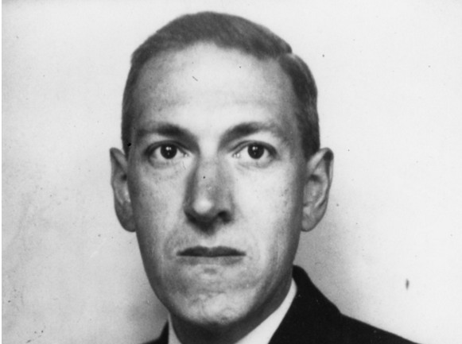

Howard Philips Lovecraft was the author of 180 works, including collaborations.
Brief outline of HPL's life:
1890 - Howard Philips Lovecraft is born on August 20 in Providence, Rhode Island.
1898 - Lovecraft's father dies of syphilis.
1899 - First starts printing The Scientific Gazette.
1903 - Begins printing the Rhode Island Journal of Astronomy.
1905 - Earliest story, "The Beast in the Cave".
1914 - Joins the United Amateur Press Association after invitation by UAPA president.
1915 - Begins printing The Conservative.
1917 - Starts writing again, with short stories "Dagon" and "The Tomb".
1919 - Mother suffers a nervous breakdown and is committed.
1921 - Mother dies in hospital.
1922 - Marries Sonia Haft Greene. First commercially-published work printed.
1926 - Writes "The Call of Cthulhu".
1929 - Divorce.
1931 - Writes "At the Mountains of Madness".
1935 - Writes "The Shadow Out of Time".
1936 - Lovecraft's frequent correspondent and creator of Conan the Barbarian Robert E. Howard commits suicide.
1937 - Dies from intestinal cancer.
Now that time has given us some perspective on his work, I think it is beyond doubt that H.P. Lovecraft has yet to be surpassed as the twentieth century's greatest practitioner of the classic horror tale.